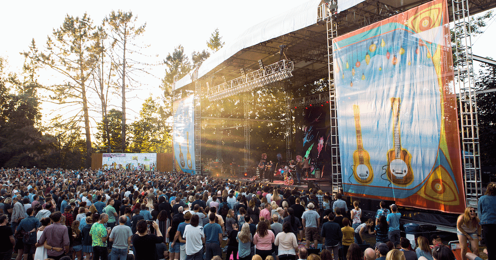
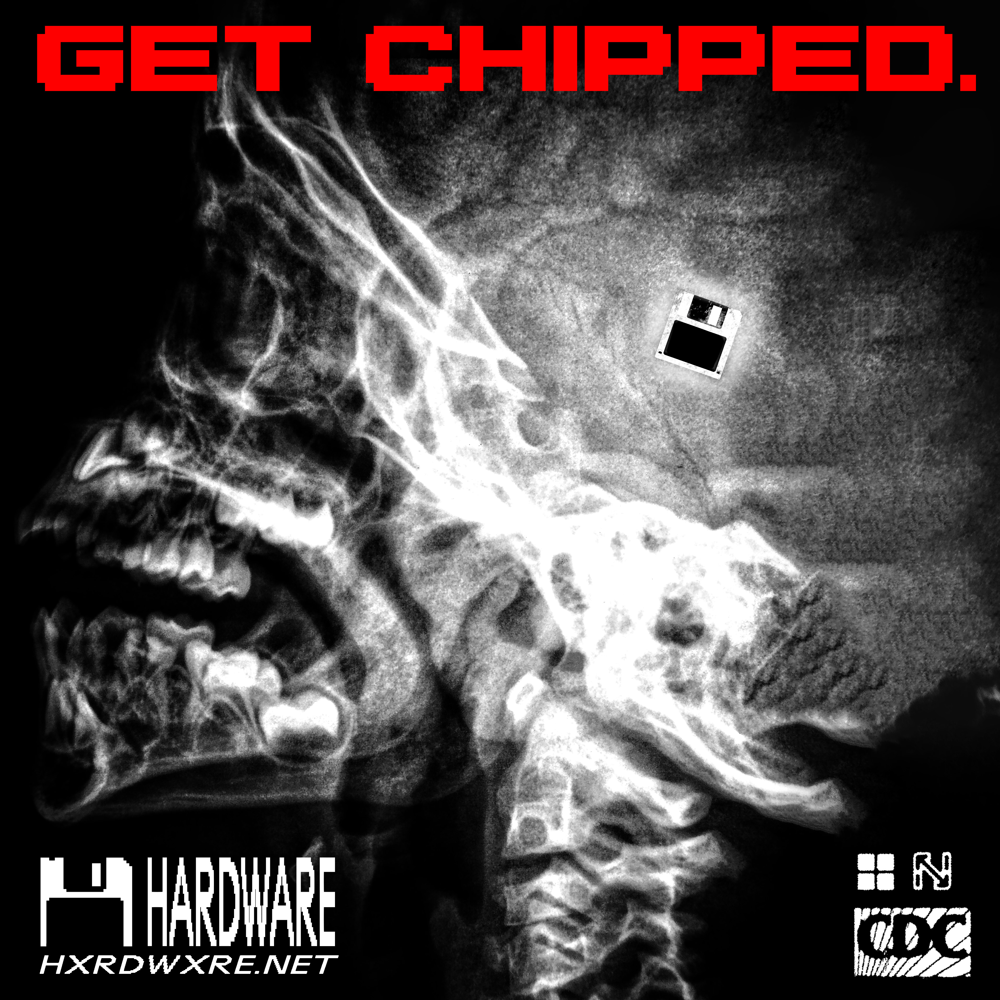

Bio—Personal Profile
I first became interested in the music industry through a job I had as a teenager, selling concessions at Edgefield, McMenamins—a concert venue just outside of Portland, OR, where I grew up.

It wasn't so much the glamour and glitz of the big stars on stage, but rather, seeing everyone else that it took to put on a show. The sound engineers running live sound, the instrumentalists and backup singers, the concert promoters making sure to bring a crowd to the musicians. It was the first time I saw the music industry as a vast and inclusive community, something I felt that I could be a part of one day too.
At Edgefield, I found a close friend in Everett Biron, the man behind the experimental hip-hop/dance-pop project GOOD SAMARITAN (as featured in V Magazine).

A few months later, along with Alex Peterson of Melophobia, we were collaborating on music and playing shows together at local venues like the Crystal Ballroom

and the Cruzroom.

Everett had a signifcant impact on the direction of my earlier music and though we have now gone seperate ways sonically, in 2020 we added a few new members to our roster to create HARDWARE—an artist collective filled with talented rappers, producers, sound engineers and graphic designers.

That same year that we founded HARDWARE, I also released my first album: Through the Hallways of Shatterproof Glass. This project was the culmination of the first three years of my journey as an artist. If I went back now, there's probably many things I would like to change about it but I'm happy with the project as an artistic expression of all of my early doubts and wonder as I entered the greater world of music, the world of honing a craft.
Currently, I attend Loyola University New Orleans, where I pursue a further study of music and the music industry.